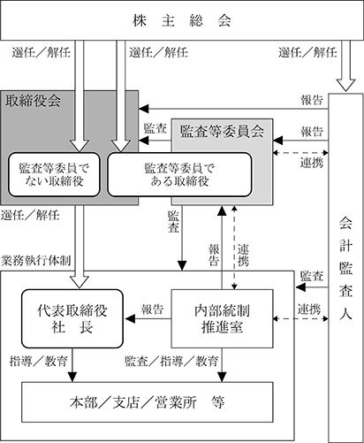

該当事項はありません。
該当事項はありません。
③ 【その他の新株予約権等の状況】
該当事項はありません。
該当事項はありません。
(注) 2023年８月１日付で、普通株式１株につき３株の割合で株式分割を実施しております。これにより株式分割後の発行済株式数は1,639,200株増加し、2,458,800株となっております。
2024年１月31日現在
(注) 自己株式469,638株は「個人その他」に4,696単元、「単元未満株式の状況」に38株含まれております。
2024年１月31日現在
(注) 上記のほか当社所有の自己株式469千株(19.1％)があります。
2024年１月31日現在
(注) 「単元未満株式」欄の普通株式には、当社所有の自己株式が38株含まれております。
2024年１月31日現在
該当事項はありません。
(注) 2023年８月１日付で普通株式１株につき３株の割合で株式分割を行ったことにより、当該株式分割による調整後の株式数を記載しております。
(注) １ 2023年８月１日付で普通株式１株につき３株の割合で株式分割を行ったことにより、当事業年度における取得自己株式数は、当該株式分割による調整後の株式数を記載しております。
２ 当期間における保有自己株式数には、2024年４月１日から有価証券報告書提出日までの単元未満株式の買い取りによる株式数は含めておりません。
(注) １ 2023年８月１日付で普通株式１株につき３株の割合で株式分割を行ったことにより、当事業年度における取得自己株式数は、当該株式分割による調整後の株式数を記載しております。
２ 当期間における保有自己株式数には、2024年４月１日から有価証券報告書提出日までの単元未満株式の買い取りによる株式数は含めておりません。
当社は、株主の皆様に対する利益還元を経営の重要な課題と位置づけております。また、株主資本の充実と経営基盤の確立に努めつつ、業績に対応した利益還元策を持続しながら、安定的な配当を行うことを基本方針としております。
内部留保資金につきましては、財務体質の強化と更なる事業の拡大に役立ててまいりたいと考えております。
剰余金の配当は、年１回期末配当をさせていただいております。配当の決定機関は株主総会であります。
当事業年度の剰余金の配当につきましては、継続的な安定配当の基本方針のもとに、2024年４月23日の定時株主総会により配当金の総額69百万円、１株当たり35円00銭を実施することといたしました。
当社は取締役会の決議により毎年７月31日を基準日として中間配当を行うことができる旨を定款に定めております。
(注) 基準日が当事業年度に属する剰余金の配当は、以下のとおりであります。
当社は、当社の企業理念であります「社会に貢献できる職場づくり」「働いて良かったといえる職場づくり」の下に、経営の公正性、透明性を高め、業績と企業価値の向上を図るとともに、事業活動を通じてステークホルダー(利害関係者)との良好な関係を構築し、また、コンプライアンス(法令順守)の徹底を図ることをコーポレート・ガバナンスの基本方針としております。
当社は、2024年４月23日開催の第57期定時株主総会において、取締役会の監督機能を強化し、コーポレート・ガバナンスの一層の充実を図るため、監査等委員会設置会社への移行等を目的とする定款の変更が決議されたことにより、監査役会設置会社から監査等委員会設置会社へ移行しております。
当社の取締役会は、本書提出日現在、取締役（監査等委員である取締役を除く。）８名、監査等委員３名で構成されております。取締役（監査等委員である取締役を除く。）取締役会は経営の基本方針、法令及び定款で定められた事項並びに経営に関する重要事項を決定する機関として取締役会及び常務会を定例的に開催し、必要に応じて随時、臨時取締役会を開催しております。
また、当社は監査等委員会設置会社であり、監査等委員である取締役は３名で構成され、３名すべてが社外取締役であります。各監査等委員は取締役会をはじめとする重要な会議に出席し、構成員として取締役会での議決権を持つことで、取締役会の業務執行の監督を行っております。また、業務及び財産の状況の調査、会計監査人の選解任や役員報酬に係る権限の行使等を通じて、取締役の職務執行及び内部統制システムに関わる監査を行っております。また、社外取締役制度を導入することにより、経営の意思決定の透明性・公平性を確保しております。
当社のコーポレート・ガバナンス体制の概要は、下記のとおりです。

内部統制システムの整備の状況
当社は取締役会において内部統制システムに関する基本方針、すなわち取締役の職務の執行が法令及び定款に適合することを確保するための体制、その他会社の業務の適正を確保するための体制について定めております。
コンプライアンスやリスク管理体制を統括する内部統制推進室を設置し、内部統制推進室の指示に基づき、社内規定の整備及び取締役・使用人への教育を実施しております。
リスク管理体制の整備の状況
当社はリスク管理を経営の重要課題と位置づけ、各部門の業務におけるリスクは担当業務役員が責任者となり、各部門に対してリスクヒヤリングを実施し、リスクの見直しと軽減化を図るとともに発生時に迅速に対応できるよう管理体制の整備に努めております。
損失の危険が発生した場合、危険の内容と損失の程度等について、直ちに代表取締役社長・取締役会・監査等委員会に通報される体制をとっております。
反社会的勢力排除に向けた基本的な考え方
当社は、役職員が遵守すべき行動規範として、コンプライアンスマニュアル「太洋基礎工業行動基準」を定め、企業倫理を十分に認識し、業務を誠実かつ公正に遂行することを表明しております。反社会的勢力や団体との関係は一切遮断し、不当な要求に対しても毅然とした対応で臨み拒絶しております。
排除に向けた整備状況としましては、総務部を対応統括部署として、反社会的勢力や団体に関する情報収集及び管理を行っております。また、当社は名古屋市中川区建設業防犯協会に加盟し、所轄警察管内における情報交換に積極的に参加し、外部専門機関と連携し、常に相談できる体制を整備しております。
④ 取締役会の活動状況
当事業年度において当社は取締役会を９回開催しており、個々の取締役の出席状況については次のとおりであります。
取締役会における具体的な検討内容は、内規に従い、法定に関する事項、重要な業務に関する事項、経理に関する事項、人事に関する事項等であります。
⑤ 責任限定契約の内容の概要
当社は、会社法第427条第１項に基づき、社外取締役及び監査等委員である取締役全員との間において、会社法第423条第１項の損害賠償責任を限定する契約を締結しております。当該契約に基づく損害賠償責任限度額は、法令が定める額としております。なお、当該責任限定が認められるのは、当該社外取締役及び監査等委員である取締役が責任の原因となった職務の遂行について善意でかつ重大な過失がないときに限られます。
⑥ 取締役の定数
当社の取締役は当会社の監査等委員でない取締役は15名以内とし、監査等委員である取締役は４名以内とする旨を定款に定めております。
当社は取締役の選任決議について、議決権を行使することができる株主の議決権の３分の１以上を有する株主が出席し、その議決権の過半数をもって行う旨を定款に定めております。
また、取締役の選任決議は、累積投票によらないものとする旨を定款に定めております。
当社は、経営環境の変化に対応した機動的な資本政策を遂行できるよう、会社法第165条第２項の規定に基づき、取締役会決議によって市場取引等により自己の株式を取得することができる旨定款に定めております。また、会社法第454条第５項の規定により、機動的な配当政策を遂行できるよう、取締役会の決議によって毎年７月31日を基準日として、中間配当を行うことができる旨を定款に定めております。
当社は、会社法第309条第２項に定める株主総会の特別決議要件について議決権を行使することができる株主の議決権の３分の１以上を有する株主が出席し、その議決権の３分の２以上をもって行う旨定款に定めております。これは、株主総会における特別決議の定足数を緩和することにより、株主総会の円滑な運営を行うことを目的とするものであります。
男性
(注) １ 取締役一栁守央氏、太田好宣氏、皆見幸氏は、社外取締役であります。
２ 取締役(監査等委員である取締役を除く。)の任期は、2024年４月23日開催の定時株主総会終結の時から選任後１年以内に終了する事業年度のうち、最終のものに関する定時株主総会終結の時までであります。
３ 監査等委員である取締役の任期は、2024年４月23日開催の定時株主総会終結の時から選任後２年以内に終了する事業年度のうち、最終のものに関する定時株主総会終結の時までであります。
４ 2024年４月23日開催の第57期定時株主総会の終結をもって、当社は同日付で監査等委員会設置会社へ移行いたしました。
当社は、経営監視機能の客観性及び中立性を確保するため、監査等委員である社外取締役を３名選任しております。社外取締役である一栁守央氏、太田好宣氏、皆見幸氏は当社と人的関係、資本的関係又は取引関係その他の利害関係はありません。
なお、当社は、社外取締役を選任するにあたり、独立性に関する基準又は方針は特に設けておりませんが、選任にあたっては、会社法に定める社外性の要件を満たすというだけでなく、東京証券取引所の独立役員の基準等を参考にしております。
社外取締役一栁守央氏は公認会計士としての経歴を持っており、専門的な見知より当社の経営全般に適切な監督機能を果たしていただけるものと期待しております。社外取締役太田好宣氏は経営者として建設業界に精通した見識を有しており、また、社外取締役皆見幸氏は公認会計士として豊富な経験を積んでおり、当社の業務執行に対する監督・助言等をいただいており、引き続きその経験と見識を当社の経営判断に生かしていただけるものと判断しております。これら社外取締役の活動は、当社が経営判断を行うにあたり重要な役割を果たしており、適切な選任状況であると考えております。
社外取締役が出席する取締役会において、内部監査及び会計監査の結果等を含めた内部統制の状況の報告が行われており、主として取締役会への出席を通じて監督を行っております。
③ 社外取締役による監督又は監査と内部監査、監査等委員会監査及び会計監査との相互連携並びに内部統制部門との関係
社外取締役はいずれも経営陣から独立した立場で、経営の監督あるいは監査を行っております。また、取締役会においてコンプライアンスやリスク管理等を含む内部統制システムの整備・運用状況及び内部監査結果の報告を受け、適宜意見を述べております。また、内部監査部門及び会計監査人と連携をとって実効的な監査を行い、経営の監督機能の向上を図っております。
会計監査人との連携につきましては、社外取締役は会計監査人から各事業年度の監査計画及び監査結果について報告を受け、また必要に応じて情報支援等を行い緊密な連携関係の維持向上に努めております。
(3) 【監査の状況】
1) 経営の透明性の向上
委員の過半数が社外取締役で構成される監査等委員会が、取締役の職務執行について適法性及び妥当性の観点から監査・監督を担うことで、さらに透明性の高い経営を実現し、国内外のステークホルダーの期待により的確に応じうる体制の構築を目指します。
2) 意思決定の迅速化
取締役会の業務執行の決定権限を広く取締役に委任することを可能とすることにより、取締役会の適切な監督のもとで経営の意思決定及び業務執行のさらなる迅速化を図ります。
なお、本項については監査役監査の状況について記載しております。
① 監査役監査の状況
監査役会は定期的に開催し、監査の実施、情報の共有等を図り、重要な会議に参加し、取締役会の業務執行について業務監査を行っております。
会計監査の状況につきましては、監査法人 アンビシャスと監査契約を締結し、会社法及び金融商品取引法に基づき、会計に関する事項の監査を受けており、監査役との間で監査情報の交換を実施し情報の共有を図っております。
当事業年度において当社は監査役会を年５回開催しており、個々の監査役の出席状況については次のとおりであります。
(注) 北川充彦は2024年４月23日定時株主総会の終結をもって退任しております。
監査役監査における主な検討事項としましては、各法令に定める計算書類が法令及び定款に従い、会社の状況を正しく示しているかどうか、取締役の職務の執行に関する不正の行為又は法令若しくは定款に違反する重大な事実がないか、監査公認会計士等の監査計画の内容、会計監査の職務遂行状況等の評価が挙げられます。
また、常勤の監査役の活動として、取締役会のほか、経営会議等の社内重要会議に出席するとともに、取締役から業務執行の状況について直接聴取を行い、業務執行の状況やコンプライアンスに関する問題点を日常業務レベルで監視する体制を整備し、経営監視機能の強化及び向上を図っております。
内部監査につきましては７名(経理、総務)があたり、監査役監査は３名の監査役、うち常勤監査役１名、社外監査役(非常勤)２名の構成で監査を行っております。当社の社外監査役は公認会計士、建設業界に精通した者で各専門分野において相当程度の知見を有するものをそれぞれ選任し、監査機能強化を図っております。
監査法人 アンビシャス
2020年１月期以降の５年間
代表社員 業務執行社員 今 津 邦 博
代表社員 業務執行社員 田 中 昭 仁
当社の会計監査業務に係る補助者は、公認会計士５名からなっております。
監査法人の品質管理体制、専門性、独立性を総合的に勘案して、当社の会計及び内部統制監査が適正かつ妥当に行われると判断したためであります。また、監査法人の職務の執行に支障がある等、不再任・解任の必要があると判断した場合、その決議は監査役会全員一致によって行われます。監査役会の選任した監査役が解任後最初の株主総会において解任の旨及びその理由を説明することとなっております。
当社の監査役及び監査役会は、監査法人に対して評価を行っております。監査法人から内部統制の評価及び監査の状況について報告を受け、必要に応じて説明を求めました。また、監査法人が独立の立場を保持し、かつ、適正な監査を実施しているかを監視及び検証するとともに、監査法人からその職務の執行状況について報告を受け、必要に応じて説明を求めました。このような方法に基づき、財務計算に関する書類及び内部統制報告書は、法令及び定款に従い会社の状況を正しく示しているものと評価いたしました。
該当事項はありません。
該当事項はありません。
当社の監査公認会計士等に対する監査報酬の決定方針といたしましては、特に定めておりませんが、業務の特性、監査日数等を勘案して決定しております。
取締役会が提案した会計監査人に対する報酬等に対して当社の監査役会が会社法第399条第１項の同意をした理由は、会計監査人の監査計画の内容、会計監査の職務遂行状況及び報酬見積りの算出根拠等が適切であるかどうかについて、必要な検証を行ったうえで、監査役会の同意を得たためであります。
(4) 【役員の報酬等】
役員の基本報酬の決定方針につきまして、役員の基本報酬は当社の内規に従い代表取締役社長がその額を決定しております。なお、役員退職慰労金につきましては、定時株主総会の決議後、取締役（監査等委員である取締役を除く。）は取締役会において、また監査等委員である取締役は監査等委員内の協議において当社の内規に従いその額を決定しております。
当社の役員の報酬等に関する株主総会決議年月日は2024年３月24日であり、決議の内容は取締役（監査等委員である取締役を除く。）の員数15名以内の報酬限度額は年額150百万円以内（これには、使用人兼務役員の使用人分給与は含みません。）であります。当該株主総会終結時点の取締役の員数は11名です。また、監査等委員である取締役の員数４名以内の報酬限度額は年額20百万円以内であります。当該株主総会終結時点の監査等委員である取締役の員数は３名です。
② 取締役の個人別の報酬等の内容に係る方針に関する事項
取締役の報酬水準については、経営内容、事業規模等の類似する会社の報酬水準、従業員給与等とのバランスを考慮して、求められる役割及び責任を勘案した上で設定しております。
当社の社外取締役を除く取締役の報酬は、役位に応じて決定される固定報酬（年俸制）と業績連動報酬である役員賞与に分かれており、株主総会にて決定する報酬総額の限度内で、経営内容、経済状況等を考慮し、担当する役員の職務、業績、貢献度等の要素を基準に算定しており、個人別の報酬額については取締役会決議に基づき、代表取締役社長がその具体的内容について委任を受け、報酬額を決定しております。
業務執行から独立した立場である社外取締役の報酬は、固定報酬のみとなっており、業績連動報酬である役員賞与は支給しておりません。
監査役の報酬はその役割から固定報酬のみとなっており、監査等委員である取締役の協議により決定しております。
③ 当事業年度における役員の報酬等
当事業年度における取締役の報酬については、株主総会決議により決定された限度額の範囲内で、代表取締役が各取締役の業務評価、会社の業績、従業員給与とのバランス、外部機関の役員報酬調査データを勘案しながら素案を作成し、社外取締役が中立的な立場で適切な関与、助言を行い、2023年4月23日開催の取締役会において決定いたしました。また、監査等委員である取締役の報酬については、株主総会決議により決定された限度額の範囲内で、2023年4月23日において監査等委員である取締役の協議により決定いたしました。
(注) 上記には、2024年４月23日開催の第57回定時株主総会終結の時をもって退任した監査役１名を含めております。
報酬等の総額が１億円以上であるものが存在しないため、記載しておりません。
(5) 【株式の保有状況】
純投資目的である投資株式とは、株式の配当や値上がり益を得ることを目的として保有する株式を意図し、純投資目的以外の目的である株式とは、発行会社との関係性から事業上の何らかの便益を目的として保有する株式と位置付けております。当社では、純投資目的の投資は行わず、純投資目的以外の目的である投資株式のみを保有する方針としております。
当社は発行会社との関係性において、中長期的な関係維持のための取引先への出資など、当該株式を保有する高度の合理性があると判断する場合に限り他社株式を保有します。
保有株式については、株式取得時の投資目的や直近の事業戦略等との整合性、株式保有による便益やリスクといった観点から、経営会議等で保有の合理性を検証しています。上記検証の結果、保有の合理性が乏しいと判断した場合には、取締役会にて株式の売却を検討いたします。
保有株式については、個別銘柄ごとに中長期的な関係維持の保有目的に沿った便益が得られているか、経営会議等にて慎重に審議した結果、保有する高度の合理性があると判断いたしました。
特定投資株式
(注) 当事業年度末において保有している特定投資株式については、定量的な保有効果の記載が困難であるため定性的な観点から判断した保有効果を記載しております。